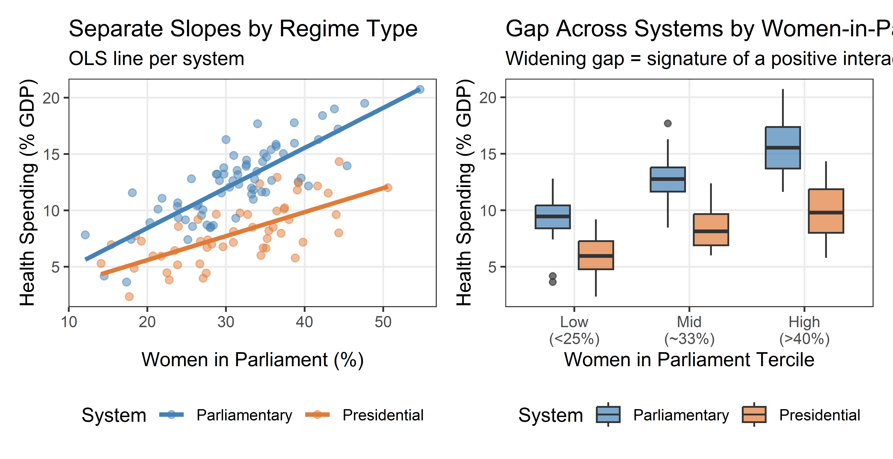
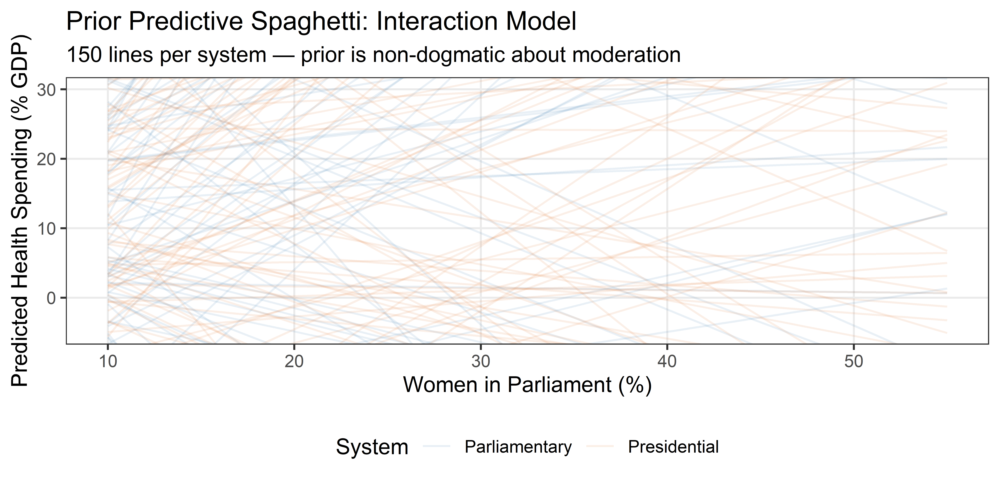
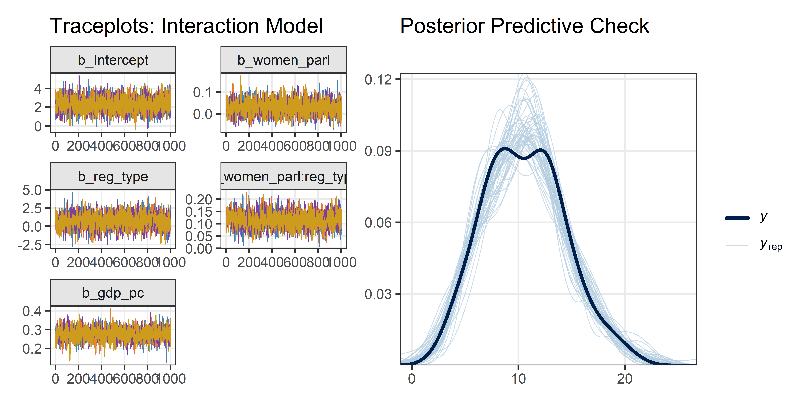
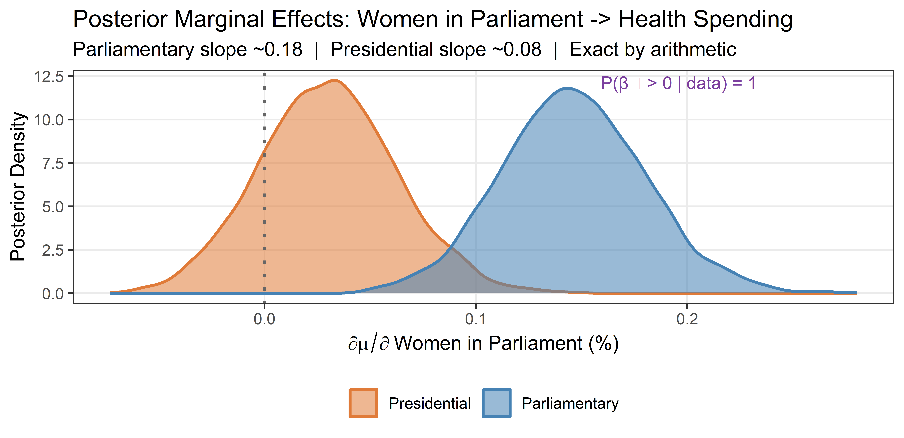

start_time <- Sys.time() # used to measure execution time at the end
library(tidyverse) # data manipulation and ggplot2
library(brms) # Bayesian regression via Stan
library(bayesplot) # MCMC diagnostic plots
library(patchwork) # composing multi-panel figures
# Shared colour palette — reused in every plot so figures look consistent
col_1 <- "steelblue"
col_2 <- "#E07B39"
col_3 <- "#7B3F9E"
col_4 <- "goldenrod3"
chain_cols <- c(col_1, col_2, col_3, col_4) # one colour per MCMC chainWeek 10 Lab: Interactions
Applications from the lecture — work through the code and check that it runs
Setup
Before running any analysis, we load the packages we need and define a few shared colour constants that keep plots visually consistent. brms fits Bayesian regression models via Stan; bayesplot produces MCMC diagnostics; patchwork assembles multi-panel figures.
Part I: Application — Interaction brms Model
The Research Question
Last week we established that women’s parliamentary representation is associated with higher health spending, after controlling for GDP per capita and regime type as an additive intercept shift. But the additive model assumes the slope of the women-in-parliament association is the same for both presidential and parliamentary systems.
Part I relaxes this assumption:
Does the association between female legislator share and health spending vary by regime type?
Legislative composition theory: parliamentary systems concentrate budget authority in the legislature — strong party discipline, parliamentary sovereignty, budget processes rooted in the legislature. Presidential systems divide power across branches, potentially weakening the translation of legislative preferences into policy. This predicts a steeper slope for women in parliament in parliamentary systems.
DGP: Synthetic Data
We use the same synthetic dataset as Week 9, reproduced here so this lab runs standalone. The data-generating process already encodes the interaction: the true women-in-parliament slope is 0.08 in presidential systems and 0.18 in parliamentary systems.
Code
set.seed(2026) # same seed as Week 9 — identical dataset
n <- 120
# ── Population-level parameters (the ground truth) ──────────────────────────
beta_0 <- 2 # intercept (presidential baseline)
beta_women_pres <- 0.08 # women_parl slope in presidential systems
beta_gdp <- 0.20 # GDP per capita partial association
beta_reg <- 1.5 # parliamentary intercept shift
beta_interact <- 0.10 # extra women_parl slope in parliamentary systems
sigma <- 1.5 # residual standard deviation
# ── Data-generating process ──────────────────────────────────────────────────
gdp_pc <- rnorm(n, mean = 18, sd = 7)
women_parl <- 15 + 0.9 * gdp_pc + rnorm(n, 0, 5)
reg_type <- rbinom(n, 1, prob = 0.55) # 1 = parliamentary, 0 = presidential
health_spend <- beta_0 +
beta_gdp * gdp_pc +
beta_women_pres * women_parl +
beta_reg * reg_type +
beta_interact * women_parl * reg_type + # steeper slope in parliamentary
rnorm(n, 0, sigma)
df <- tibble(gdp_pc, women_parl, reg_type, health_spend) |>
mutate(system = if_else(reg_type == 1, "Parliamentary", "Presidential"))True women-in-parliament slopes:
| System | Slope |
|---|---|
Presidential (reg_type = 0) |
0.08 |
Parliamentary (reg_type = 1) |
0.08 + 0.10 = 0.18 |
The interaction coefficient \(\beta_3 = 0.10\) captures how much steeper the parliamentary slope is relative to the presidential slope.
Step 1: DAG and Estimand
The DAG from Week 9 shows regime type having a direct arrow into health spending (intercept shift, captured last week) and a moderation role on the women-in-parliament → health-spending edge (the interaction we estimate today).
Because we already control for GDP per capita (the confounder), no additional adjustment is needed. The interaction term itself is the new quantity of interest.
Estimand 1: \(\partial\mu/\partial X \mid Z=0\) — women-in-parliament slope in presidential systems.
Estimand 2: \(\partial\mu/\partial X \mid Z=1\) — women-in-parliament slope in parliamentary systems.
Estimand 3: \(\beta_3\) — the slope difference; how much more does women’s representation associate with health spending in parliamentary vs. presidential systems?
Step 2: Data Summary
We start with the marginal distribution of health spending by system type, then examine the joint scatter with separate OLS lines per group and a tercile-based boxplot comparison.
Code
df |>
ggplot(aes(x = health_spend, fill = system, colour = system)) +
geom_density(alpha = 0.45, linewidth = 0.8) +
scale_fill_manual(
values = c("Parliamentary" = col_1, "Presidential" = col_2)
) +
scale_colour_manual(
values = c("Parliamentary" = col_1, "Presidential" = col_2)
) +
theme_bw() +
theme(panel.grid.minor = element_blank(), legend.position = "bottom") +
labs(
x = "Health Spending (% GDP)",
y = "Density",
title = "Distribution of Health Spending by Regime Type",
subtitle = "Parliamentary systems spend more on average",
fill = NULL,
colour = NULL
)
NoteAlternative implementation
df |>
ggplot(aes(x = system, y = health_spend, fill = system)) +
geom_violin(alpha = 0.6) +
geom_jitter(width = 0.1, alpha = 0.35, size = 1.2) +
scale_fill_manual(
values = c("Parliamentary" = col_1, "Presidential" = col_2), guide = "none"
) +
theme_bw() +
labs(title = "Health spending by regime type — violin view",
x = NULL, y = "Health Spending (% GDP)")The scatter below puts women in parliament on the x-axis and draws separate OLS lines for each system type. If the lines have visibly different slopes, that is preliminary evidence for an interaction. The boxplot facets women in parliament into terciles and shows whether the gap between systems widens with more female legislators — the visual signature of \(\beta_3 > 0\).
Code
p_scatter_int <- df |>
ggplot(aes(x = women_parl, y = health_spend, colour = system)) +
geom_point(alpha = 0.5, size = 1.8) +
geom_smooth(
aes(group = system),
method = "lm",
se = FALSE,
linewidth = 1.2
) +
scale_colour_manual(
values = c("Parliamentary" = col_1, "Presidential" = col_2),
name = "System"
) +
theme_bw() +
theme(panel.grid.minor = element_blank(), legend.position = "bottom") +
labs(
x = "Women in Parliament (%)",
y = "Health Spending (% GDP)",
title = "Separate Slopes by Regime Type",
subtitle = "OLS line per system"
)
df_interact_plot <- df |>
mutate(
wp_tercile = cut(
women_parl,
breaks = quantile(women_parl, c(0, 1 / 3, 2 / 3, 1)),
labels = c("Low\n(<25%)", "Mid\n(~33%)", "High\n(>40%)"),
include.lowest = TRUE
)
)
p_box_int <- df_interact_plot |>
ggplot(aes(x = wp_tercile, y = health_spend, fill = system)) +
geom_boxplot(
alpha = 0.7,
position = position_dodge(width = 0.75),
width = 0.6
) +
scale_fill_manual(
values = c("Parliamentary" = col_1, "Presidential" = col_2),
name = "System"
) +
theme_bw() +
theme(panel.grid.minor = element_blank(), legend.position = "bottom") +
labs(
x = "Women in Parliament Tercile",
y = "Health Spending (% GDP)",
title = "Gap Across Systems by Women-in-Parliament Level",
subtitle = "Widening gap = signature of a positive interaction"
)
p_scatter_int | p_box_int
NoteAlternative implementation
df |>
mutate(tercile = cut(women_parl,
breaks = quantile(women_parl, c(0, 1/3, 2/3, 1)),
labels = c("Low WP", "Mid WP", "High WP"),
include.lowest = TRUE)) |>
ggplot(aes(x = tercile, y = health_spend, fill = system)) +
geom_boxplot(position = position_dodge(0.75), alpha = 0.7) +
scale_fill_manual(values = c("Parliamentary" = col_1, "Presidential" = col_2)) +
theme_bw() +
labs(title = "Spending gap across systems — tercile view",
x = "Women in Parliament Tercile", y = "Health Spending (% GDP)", fill = NULL)Step 3: Formal Model Specification
The interaction model augments the additive model with a product term:
\[ Y_i \sim \text{Normal}(\mu_i,\, \sigma) \]
\[ \mu_i = \alpha + \beta_1 X_i + \beta_2 D_i + \beta_3 (X_i \cdot D_i) + \beta_Z Z_i \]
where \(X\) = women in parliament (%), \(D\) = regime type (1 = parliamentary), \(Z\) = GDP per capita.
The two conditional marginal effects are now functions of the moderator:
\[ \frac{\partial\mu}{\partial X} = \beta_1 + \beta_3 D \qquad \frac{\partial\mu}{\partial D} = \beta_2 + \beta_3 X \]
Priors:
\[ \alpha \sim \text{Normal}(10, 5) \qquad \beta_1, \beta_2, \beta_Z \sim \text{Normal}(0, 2) \qquad \beta_3 \sim \text{Normal}(0, 2) \qquad \sigma \sim \text{Exponential}(1) \]
The prior for \(\beta_3\) is centred at zero — our prior expectation is no moderation, given the data and our prior. This is appropriately humble: we should not encode strong prior beliefs about the direction of an interaction before seeing the evidence.
We fit two competing models:
fit_multi(no interaction): assumes the women-in-parliament slope is the same for all system types — a testable restriction.fit_interact(interaction): relaxes this restriction. Iffit_interactfits substantially better via LOO-IC, we have evidence that the restriction is false.
Step 4: Prior Predictive Check
For the interaction model, we draw regression lines from the joint prior — one bundle per regime type. The check asks: does the prior allow a wide enough range of slope differences, including no moderation (parallel lines), strong moderation (strongly diverging lines), and implausible configurations?
Code
set.seed(2026)
n_pp2 <- 150
wp_seq <- seq(10, 55, length.out = 60)
gdp_mean <- mean(df$gdp_pc)
prior_lines_int <- tibble(
sim = 1:n_pp2,
b0 = rnorm(n_pp2, 10, 5), # intercept draws — Normal(10, 5)
b_wp = rnorm(n_pp2, 0, 2), # women_parl slope draws — Normal(0, 2)
b_reg = rnorm(n_pp2, 0, 2), # regime-type main effect draws — Normal(0, 2)
b_int = rnorm(n_pp2, 0, 2), # interaction term draws — Normal(0, 2)
b_gdp = rnorm(n_pp2, 0, 2) # GDP slope draws — Normal(0, 2)
) |>
expand_grid(women_parl = wp_seq, reg_type = c(0L, 1L)) |>
mutate(
y_hat = b0 +
b_wp * women_parl +
b_reg * reg_type +
b_int * women_parl * reg_type + # slope shifts by b_int in parliamentary
b_gdp * gdp_mean,
system = if_else(reg_type == 1, "Parliamentary", "Presidential")
)
prior_lines_int |>
ggplot(aes(
x = women_parl,
y = y_hat,
group = interaction(sim, system),
colour = system
)) +
geom_line(alpha = 0.12, linewidth = 0.5) +
scale_colour_manual(
values = c("Parliamentary" = col_1, "Presidential" = col_2),
name = "System"
) +
coord_cartesian(ylim = c(-5, 30)) +
theme_bw() +
theme(panel.grid.minor = element_blank(), legend.position = "bottom") +
labs(
x = "Women in Parliament (%)",
y = "Predicted Health Spending (% GDP)",
title = "Prior Predictive Spaghetti: Interaction Model",
subtitle = "150 lines per system — prior is non-dogmatic about moderation"
)
Step 5: Fit Both Models
We use the * operator in the brm() formula. women_parl * reg_type is shorthand for women_parl + reg_type + women_parl:reg_type. Always use *, not just the colon form (:). The colon-only form omits the main effects, which forces \(\beta_1 = 0\) and \(\beta_2 = 0\) — usually a false and arbitrary constraint.
We fit fit_multi (additive, no interaction) as the comparison baseline, then fit_interact (the model of interest).
Code
# Additive multivariate model — comparison baseline from Week 9
fit_multi <- brm(
health_spend ~ women_parl + gdp_pc + reg_type,
data = df,
prior = c(
prior(normal(10, 5), class = "Intercept"),
prior(normal(0, 2), class = "b", coef = "women_parl"),
prior(normal(0, 2), class = "b", coef = "gdp_pc"),
prior(normal(0, 2), class = "b", coef = "reg_type"),
prior(exponential(1), class = "sigma")
),
chains = 4,
iter = 2000,
warmup = 1000,
seed = 2026
)Code
# Interaction model — allows the women_parl slope to differ by regime type
# * expands to: women_parl + reg_type + women_parl:reg_type
fit_interact <- brm(
health_spend ~ women_parl * reg_type + gdp_pc,
data = df,
prior = c(
prior(normal(10, 5), class = "Intercept"),
prior(normal(0, 2), class = "b", coef = "women_parl"), # presidential slope
prior(normal(0, 2), class = "b", coef = "reg_type"), # parliamentary shift
prior(normal(0, 2), class = "b", coef = "gdp_pc"), # GDP partial effect
prior(normal(0, 2), class = "b", coef = "women_parl:reg_type"), # slope difference
prior(exponential(1), class = "sigma")
),
chains = 4,
iter = 2000,
warmup = 1000,
seed = 2026
)
NoteAlternative implementation
# Confirm priors actually applied to the interaction model
prior_summary(fit_interact)Step 6: Diagnostics and Posterior Predictive Check
We run the same convergence checks as before. The traceplots and PPC are shown side-by-side for the interaction model.
Code
p_trace_int <- mcmc_trace(
fit_interact,
pars = c(
"b_Intercept",
"b_women_parl",
"b_reg_type",
"b_women_parl:reg_type",
"b_gdp_pc"
),
facet_args = list(ncol = 2)
) +
scale_colour_manual(values = chain_cols) +
theme_bw() +
theme(
panel.grid.minor = element_blank(),
strip.background = element_rect(fill = "gray90"),
legend.position = "none"
) +
labs(title = "Traceplots: Interaction Model")
p_ppc_int <- pp_check(fit_interact, ndraws = 50) +
theme_bw() +
theme(panel.grid.minor = element_blank()) +
labs(title = "Posterior Predictive Check")
p_trace_int | p_ppc_int
NoteAlternative implementation
mcmc_rank_hist(
fit_interact,
pars = c("b_Intercept", "b_women_parl",
"b_reg_type", "b_women_parl:reg_type", "b_gdp_pc")
) +
labs(title = "Rank histograms: interaction model convergence check")Step 7: Interpreting Results and Posterior Marginal Effects
Inspect the summary output. The key quantity is b_women_parl:reg_type — the interaction coefficient \(\beta_3\). Its posterior mean should be near 0.10 (the true DGP value), given the data and prior.
Code
summary(fit_interact) Family: gaussian
Links: mu = identity
Formula: health_spend ~ women_parl * reg_type + gdp_pc
Data: df (Number of observations: 120)
Draws: 4 chains, each with iter = 2000; warmup = 1000; thin = 1;
total post-warmup draws = 4000
Regression Coefficients:
Estimate Est.Error l-95% CI u-95% CI Rhat Bulk_ESS Tail_ESS
Intercept 2.35 0.78 0.82 3.87 1.00 2942 2755
women_parl 0.03 0.03 -0.03 0.10 1.00 2560 1970
reg_type 0.74 1.01 -1.21 2.69 1.00 2228 2178
gdp_pc 0.28 0.03 0.21 0.34 1.00 2576 2050
women_parl:reg_type 0.12 0.03 0.06 0.18 1.00 2140 2041
Further Distributional Parameters:
Estimate Est.Error l-95% CI u-95% CI Rhat Bulk_ESS Tail_ESS
sigma 1.57 0.10 1.38 1.78 1.00 3535 2644
Draws were sampled using sampling(NUTS). For each parameter, Bulk_ESS
and Tail_ESS are effective sample size measures, and Rhat is the potential
scale reduction factor on split chains (at convergence, Rhat = 1).
NoteAlternative implementation
as_draws_df(fit_interact) |>
mutate(
slope_presidential = b_women_parl,
slope_parliamentary = b_women_parl + `b_women_parl:reg_type`
) |>
summarise(across(
c(slope_presidential, slope_parliamentary),
list(mean = mean,
q2.5 = \(x) quantile(x, 0.025),
q97.5 = \(x) quantile(x, 0.975))
))Posterior Line Clouds
For each MCMC draw we compute the intercept and slope for each system type by simple arithmetic and draw the resulting line. The bundle of parliamentary lines (blue) should be steeper than the presidential bundle (orange).
Code
set.seed(2026)
post_draws_int <- as_draws_df(fit_interact) |> slice_sample(n = 200)
gdp_mean <- mean(df$gdp_pc)
df |>
ggplot(aes(x = women_parl, y = health_spend, colour = system)) +
# Presidential lines: intercept = b_Intercept + b_gdp_pc * gdp_mean,
# slope = b_women_parl
geom_abline(
data = post_draws_int,
aes(
intercept = b_Intercept + b_gdp_pc * gdp_mean,
slope = b_women_parl
),
colour = col_2,
alpha = 0.05,
linewidth = 0.4
) +
# Parliamentary lines: intercept = b_Intercept + b_reg_type + b_gdp_pc * gdp_mean,
# slope = b_women_parl + b_women_parl:reg_type
geom_abline(
data = post_draws_int,
aes(
intercept = b_Intercept + b_reg_type + b_gdp_pc * gdp_mean,
slope = b_women_parl + `b_women_parl:reg_type`
),
colour = col_1,
alpha = 0.05,
linewidth = 0.4
) +
geom_point(alpha = 0.5, size = 1.8) +
scale_colour_manual(
values = c("Parliamentary" = col_1, "Presidential" = col_2),
name = "System"
) +
theme_bw() +
theme(panel.grid.minor = element_blank(), legend.position = "bottom") +
labs(
x = "Women in Parliament (%)",
y = "Health Spending (% GDP)",
title = "Posterior Line Clouds by Regime Type",
subtitle = "200 MCMC draws per group — blue bundle (parliamentary) is steeper"
)
NoteAlternative implementation
# brms built-in: automatic interaction plot
plot(conditional_effects(
fit_interact,
effects = "women_parl:reg_type"
))Posterior Conditional Marginal Effects
The conditional marginal effect of women in parliament for a given system type is a function of \(\beta_1\) and \(\beta_3\):
\[ \text{ME}_{\text{presidential}} = \beta_1 \qquad \text{ME}_{\text{parliamentary}} = \beta_1 + \beta_3 \]
Because we have full posterior draws of both \(\beta_1\) and \(\beta_3\), we compute these by arithmetic — no approximation or delta method needed. The resulting distributions are posterior statements, given the data and prior.
Code
post_all_int <- as_draws_df(fit_interact)
me_df <- post_all_int |>
transmute(
`Presidential` = b_women_parl, # ME at D = 0
`Parliamentary` = b_women_parl + `b_women_parl:reg_type` # ME at D = 1
) |>
pivot_longer(
everything(),
names_to = "system",
values_to = "marginal_effect"
) |>
mutate(
system = factor(system, levels = c("Presidential", "Parliamentary"))
)
# P(β₃ > 0 | data): direct posterior probability — not a p-value
prob_b3_pos <- mean(post_all_int$`b_women_parl:reg_type` > 0)
me_df |>
ggplot(aes(x = marginal_effect, fill = system, colour = system)) +
geom_density(alpha = 0.55, linewidth = 0.8) +
geom_vline(
xintercept = 0,
colour = "gray40",
linetype = "dotted",
linewidth = 0.9
) +
scale_fill_manual(
values = c("Presidential" = col_2, "Parliamentary" = col_1),
name = NULL
) +
scale_colour_manual(
values = c("Presidential" = col_2, "Parliamentary" = col_1),
name = NULL
) +
annotate(
"text",
x = max(me_df$marginal_effect) * 0.7,
y = Inf,
vjust = 1.5,
size = 3.5,
colour = col_3,
label = paste0("P(β₃ > 0 | data) = ", round(prob_b3_pos, 3))
) +
theme_bw() +
theme(panel.grid.minor = element_blank(), legend.position = "bottom") +
labs(
x = expression(partialdiff * mu / partialdiff ~ "Women in Parliament (%)"),
y = "Posterior Density",
title = "Posterior Marginal Effects: Women in Parliament -> Health Spending",
subtitle = "Parliamentary slope ~0.18 | Presidential slope ~0.08 | Exact by arithmetic"
)
NoteAlternative implementation
# Direct posterior summary of the interaction term
as_draws_df(fit_interact) |>
summarise(
mean_b3 = mean(`b_women_parl:reg_type`),
q2.5 = quantile(`b_women_parl:reg_type`, 0.025),
q97.5 = quantile(`b_women_parl:reg_type`, 0.975),
prob_pos = mean(`b_women_parl:reg_type` > 0)
)Reading the figure: the two density curves should be separated. P(β₃ > 0 | data) near 1.0 means we are nearly certain, given the data and prior, that the interaction is positive — parliamentary systems show a steeper women-in-parliament–health-spending association. This is a direct posterior probability statement, not a p-value.
Step 8: LOO-IC Model Comparison
We compare fit_multi (no interaction) against fit_interact (interaction) using LOO-IC. Because we generated the data with an interaction, fit_interact should dominate fit_multi.
Code
fit_multi <- add_criterion(fit_multi, "loo")
fit_interact <- add_criterion(fit_interact, "loo")
loo_compare(fit_multi, fit_interact) elpd_diff se_diff
fit_interact 0.0 0.0
fit_multi -4.1 2.9
NoteAlternative implementation
# WAIC as alternative to LOO-IC — should rank models identically
fit_multi <- add_criterion(fit_multi, "waic")
fit_interact <- add_criterion(fit_interact, "waic")
loo_compare(fit_multi, fit_interact, criterion = "waic")Reading the output:
- The model listed first has the highest elpd — it is the better predictive model.
elpd_diff= 0 for the winner; all other models show a negative difference (i.e., they predict worse).- When
|elpd_diff| > 2 × se_diff, the evidence strongly favours the winner.
Remaining limitations:
- The linear interaction assumes the slope difference is constant across all values of women in parliament — check with a LOESS diagnostic if needed.
- Country-year observations within the same country are correlated (assumption A5) — a multilevel structure (Week 12) would handle this.
- Omitted confounders (institutional quality, colonial history, cultural factors) may bias the women-in-parliament coefficient.
Session Info and Execution Time
Code
sessionInfo()R version 4.5.3 (2026-03-11 ucrt)
Platform: x86_64-w64-mingw32/x64
Running under: Windows 11 x64 (build 26200)
Matrix products: default
LAPACK version 3.12.1
locale:
[1] LC_COLLATE=English_United States.utf8
[2] LC_CTYPE=English_United States.utf8
[3] LC_MONETARY=English_United States.utf8
[4] LC_NUMERIC=C
[5] LC_TIME=English_United States.utf8
time zone: Europe/Berlin
tzcode source: internal
attached base packages:
[1] stats graphics grDevices utils datasets methods base
other attached packages:
[1] patchwork_1.3.2 bayesplot_1.15.0 brms_2.23.0 Rcpp_1.1.1
[5] lubridate_1.9.5 forcats_1.0.1 stringr_1.6.0 dplyr_1.1.4
[9] purrr_1.2.1 readr_2.1.6 tidyr_1.3.2 tibble_3.3.1
[13] ggplot2_4.0.1 tidyverse_2.0.0
loaded via a namespace (and not attached):
[1] gtable_0.3.6 tensorA_0.36.2.1 QuickJSR_1.8.1
[4] xfun_0.55 htmlwidgets_1.6.4 processx_3.8.6
[7] inline_0.3.21 lattice_0.22-9 callr_3.7.6
[10] tzdb_0.5.0 ps_1.9.1 vctrs_0.6.5
[13] tools_4.5.3 generics_0.1.4 curl_7.0.0
[16] stats4_4.5.3 parallel_4.5.3 pkgconfig_2.0.3
[19] Matrix_1.7-4 checkmate_2.3.3 RColorBrewer_1.1-3
[22] S7_0.2.1 distributional_0.6.0 RcppParallel_5.1.11-1
[25] lifecycle_1.0.5 compiler_4.5.3 farver_2.1.2
[28] Brobdingnag_1.2-9 codetools_0.2-20 htmltools_0.5.9
[31] yaml_2.3.12 pillar_1.11.1 StanHeaders_2.32.10
[34] bridgesampling_1.2-1 abind_1.4-8 nlme_3.1-168
[37] rstan_2.32.7 posterior_1.6.1 tidyselect_1.2.1
[40] digest_0.6.39 mvtnorm_1.3-3 stringi_1.8.7
[43] reshape2_1.4.5 labeling_0.4.3 splines_4.5.3
[46] fastmap_1.2.0 grid_4.5.3 cli_3.6.5
[49] magrittr_2.0.4 loo_2.9.0 pkgbuild_1.4.8
[52] withr_3.0.2 scales_1.4.0 backports_1.5.0
[55] timechange_0.4.0 estimability_1.5.1 rmarkdown_2.30
[58] matrixStats_1.5.0 emmeans_2.0.1 otel_0.2.0
[61] gridExtra_2.3 hms_1.1.4 coda_0.19-4.1
[64] evaluate_1.0.5 knitr_1.51 V8_8.0.1
[67] mgcv_1.9-4 rstantools_2.6.0 rlang_1.1.7
[70] xtable_1.8-4 glue_1.8.1 jsonlite_2.0.0
[73] plyr_1.8.9 R6_2.6.1 Code
end_time <- Sys.time()
cat(
"Total execution time:",
round(difftime(end_time, start_time, units = "mins"), 1),
"minutes\n"
)Total execution time: 3.1 minutes